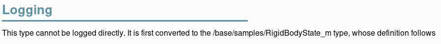
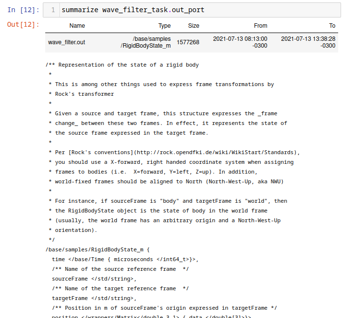
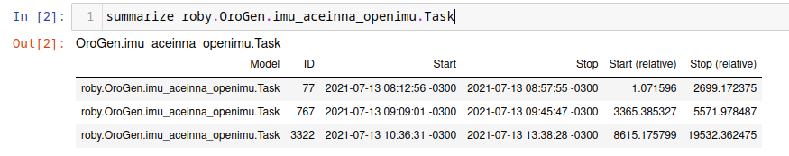
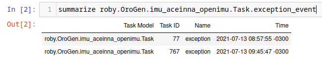
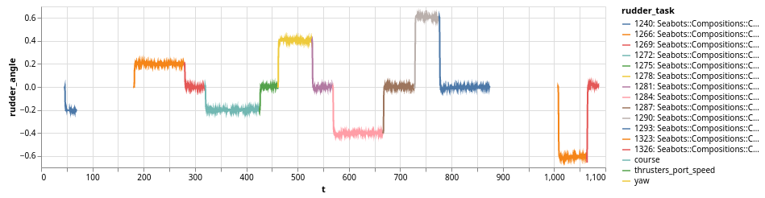

Log Analysis using Jupyter
- Preamble
- Transforming log streams into data frames
- Using Syskit data
- Plotting using Vega
- Annotating plots with Syskit task data
- Limitations
The rock.jupyter
generates a Jupyter configuration to have a Ruby kernel matching the version
from the package set. To add it to your workspace, add the package set in the
package_sets section of your autoproj/manifest, the rock.jupyter.osdeps
metapackage to the manifest itself.
package_sets:
- ...
- github: rock-core/rock.jupyter-package_set
manifest:
- ...
- rock.jupyter.osdeps
and run autoproj osdeps
To start using Jupyter within your Rock workspace, either start
jupyter-notebook after having loaded the workspace's env.sh, or start it with
autoproj exec, e.g.
.autoproj/bin/autoproj exec jupyter-notebook
At this point, you may create a notebook that uses a Ruby kernel. If you have set
the SYSKIT_LOG_DATASTORE environment variable, this kernel
will use that datastore by default.
TODO: screencast
This support is aimed at relatively simple plotting and analysis. If your goal is to perform very advanced processing (such as e.g. machine learning), we recommend to use functionality described in this guide to extract the data you need, but then export it into something other languages with bigger data analysis ecosystems (e.g. Python, R, …) can load. Everything that is being done here can be done in a single Ruby script.
The general workflow is:
- select a dataset
- restrict the processing time interval and/or specify a subsampling
- convert the streams of interest into a daru dataframe
- plot/analyze the extracted data or save it for further analysis in other languages
In addition, the DSL supports using Syskit event data to find sections of the dataset that are of interest. This is a very powerful mean to provide context to the raw data, as Syskit tasks/compositions, in the end, describe the system's intents.
Preamble
Add the following in the first cell of the notebook, to load the notebook support:
require "syskit/log"
require "syskit/log/dsl"
extend Syskit::Log::DSL
Syskit::Log::DSL is designed to ease analysis of a single dataset. Load the
dataset by its ID with the following statement. We strongly recommend that
this statement is the last of a cell, as it will display details about the
dataset, such as the list of tasks, ports and properties it contains.
dataset_select "SOME_DATASET_ID"
After this statement, all other statements will use that dataset.
Transforming log streams into data frames
For a single stream
The to_daru_frame statement is a one-stop command to convert many log streams
into a single data frame, aligning the data using the log streams' timestamps.
We will first see how it works for a single stream, and go on with multiple
streams just afterwards.
Within the DSL, reference to ports are of the form
task_name_task.port_name_port when passed as argument to to_daru_frame. For
instance, assuming we had a pose estimator task called pose_estimator in the
system, with a pose_samples port, one would do the following to create a frame
from it.
frame = to_daru_frame pose_estimator_task.pose_samples_port do |p|
...
end
The list of tasks and ports is displayed by dataset_select when it is last in
a cell.
The p object yield above by to_daru_frame represents a sample generated by
the port, and allows to create columns in the generated dataframe, based on
fields in the data type. The data type is the typelib type (i.e. C++ type or
intermediate type in a case of opaques), not the associated ruby type. See
this page
In our example, assuming the pose is a RigidBodyState, to get the X, Y and Z coordinates of the position:
frame = to_daru_frame pose_estimator_task.pose_samples_port do |p|
p.add("x") { |s| s.position.data[0] }
p.add("y") { |s| s.position.data[1] }
p.add("z") { |s| s.position.data[2] }
end
RigidBodyState being derived from opaque types, the data structure we are
manipulating here is the one showed as "Logging type" on the type page in
the Syskit IDE:

Alternatively, within the Jupyter notebook, one can use summarize to get
details about a port's data type:
summarize pose_estimator_task.pose_samples_port

If you want to use some methods from the Ruby type that is used to represent a Rock type, you may use the transform method. For instance, to create a column containing a RigidBodyState heading, do
frame = to_daru_frame pose_estimator_task.pose_samples_port do |p|
p.add("yaw") { |s| s.orientation.transform(&:yaw) }
end
RididBodyState.orientation is converted first to its Ruby equivalent
(Eigen::Quaternion) for which Rock defines a yaw method. Note that you should
do this only if it is not possible to perform the data on the column afterwards.
If you wanted to scale a column from radians to degress (for plotting later), it
is significantly faster to compute the scaling afterwards:
frame = to_daru_frame trajectory_controller_task.heading_command_port do |p|
p.add("target_angle") { |s| s.angle.rad }
end
frame["target_angle"] = frame["target_angle"] * 180 / Math::PI ~~~
Daru, the underlying dataframe handling library supports most basic numerical computations on columns, as well as some more useful sliding-window operations such as mean/stdev, …
For multiple streams
When given more than one port, to_daru_frame will align them all to the first
port. In practice, it means that it generates new lines in the frame whenever
there is a new sample for the first port, and fills the rest of the columns with
the last sample of the other streams it found just before. The selection of the
first port is therefore, rather obviously, critical.
Right now, alignment is done with the log stream's logical time, which is the time when the sample was received by the logger.
For instance:
df = to_daru_frame \
trajectory_controller_task.heading_command_port, \
pose_estimator_task.pose_samples_port do |cmd, pose|
cmd.add("cmd_heading") { |s| s.orientation.transform(&:yaw) }
pose.add("x") { |s| s.position.data[0] }
pose.add("y") { |s| s.position.data[1] }
end
Dealing with missing data
By default, when aligning multiple streams, to_daru_frame will always use the
last received sample for any given stream, regardless of how old it is. The optional
timeout parameter allows to "reset" this value after a time (in seconds) and use
the column's no-data value (which is nil for categorical data and NAN for numerical
data)
Let's assume for instance that the pose stream we have used in the above examples
have a straing 10Hz period, without skip. However, the heading command has "holes"
whenever the heading controller was not in use (for instance). The following definition
will make sure that the cmd_heading column is filled with NaNs whenever this was
the case:
df = to_daru_frame \
pose_estimator_task.pose_samples_port,
trajectory_controller_task.heading_command_port, timeout: 1 do |pose, cmd|
pose.add("x") { |s| s.position.data[0] }
pose.add("y") { |s| s.position.data[1] }
cmd.add("cmd_heading") { |s| s.orientation.transform(&:yaw) }
end
Note that the alignment happens on the first stream given as parameter. If we were
to change the order of the ports in the call to to_daru_frame, the sections without
data in that stream would instead not appear at all.
Subsampling
To do rough analysis or plotting of long datasets, the analysis DSL allows to
configure subsampling parameter using the interval_sample_every statement. It
can be given in number of samples (e.g. interval_sample_every samples: 10) or
time between samples (e.g. interval_sample_every seconds: 0.2).
One thing to consider when aligning streams is that subsampling happens to streams independently (before alignment)
Using Syskit data
Syskit execution data is also available within the notebooks, to provide context. This allows to find where things are in the timeline, a critical aspect when one has to deal with hours or even days of data in a single dataset.
The simplest form is to list instances of a given task (task context, ruby task
context, composition) model using summarize.
Given an orogen model aceinna_imu::Task, one does
summarize roby.OroGen.imu_aceinna_openimu.Task
which lists the instances of that particular task. It works for task contexts as well as compositions and ruby tasks.

Then, to restrict further processing to the interval of an instance of that particular task, one does
interval_select roby.OroGen.imu_aceinna_openimu.Task.by_id(767)
Alternatively, particular events might be of more interest, for instance
summarize roby.OroGen.imu_aceinna_openimu.Task.exception_event
Gives

which can then used to restrict the processing interval.
Plotting using Vega
The syskit-log Jupyter helpers have functionality geared towards plotting using
vega-lite (through a thin Ruby wrapper).
The simplest helper, vega_simple_plot, does a X/Y plot based on a Daru frame, e.g.
vega_simple_plot(df, x: "t", y: "velocity")
Under the scenes, daru and vega have very different data representations. The dataframe
is first converted in an array of hashes and then plotted. If multiple plot are to be
made based on the same data, it is best to convert them first with daru_to_vega:
df_vega = daru_to_vega(df)
vega_simple_plot(df_vega, x: "t", y: "velocity")
Layering simple plots can be done with
Vega.lite.data(df_vega).layer([
vega_simple_view(x: "t", y: "velocity"),
vega_simple_view(x: "t", y: "x_velocity"),
])
layer can be replaced by vconcat to have plots vertically stacked and hconcat
to have them horizontally aligned.
Generally speaking, the vega-rb layer maps the vega-lite specification in a rather straightforward way. Use Vega Lite's documentation as a reference.
For reference, vega_simple_plot and vega_simple_view are roughly equivalent to
Vega.lite.encoding(x: { field: "t", type: "quantitative" },v
y: { field: "velocity", type: "quantitative" })
.mark(type: "line").width(800)
Annotating plots with Syskit task data
The ruby_vega_mark_tasks call is a very powerful way to tag vega data with the
ID and name of a Syskit task. This would allow to e.g. change the color or style based on
the system's currently selected behavior.
For instance, let's assume we have a df dataframe converted into a df_vega Vega data
array, and we want to visualize with of the tasks contained in a current_missions array
is currently active. One would do:
roby_vega_mark_tasks("current_mission", df_vega, *current_missions, time_field: "t")
The call will add a "current_mission" field in each sample with a string that describes the task running at the time of the sample (contained in field "t"). Then the following:
vega_simple_plot(x: "t", y: "rudder_angle", color: nil)
.encoding(color: { field: "current_mission" })
would create a X/Y plot with the color of the line determined by the current task. The task list is displayed in the legend. For instance:

The roby_task_timeline also allows to simply plot a timeline of the given tasks
(as a horizontal bar graph).
Limitations
- all processing to data frames is done in the sample's logical time (time when it reached the logger) instead of the sample's own time. The long term objective is to write the latter into the former during normalization.